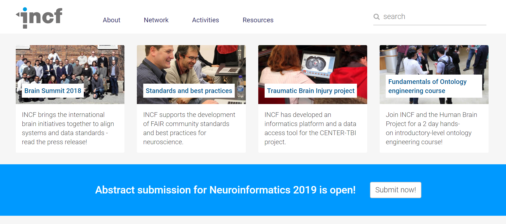
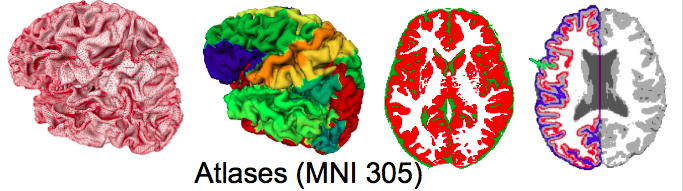

Open Neuroscience
THE Cuban and Canadian Ecosystem
February 2019
Samir Das
Associate Director - Research Software Development
McGill Centre for Integrative Neuroscience
Montreal Neurological Institute

|

|

|


Open Science Initiatives

|

|


Data Sharing Issues
| Benefits | Hurdles |
|---|---|
| More citations | Fear |
| Reduces waste/duplication | Technical challenges |
| Increased exposure | Privacy concerns |
| Access to larger datasets | Data Harmonization |
| Access to rare data | Interoperability |
| Less attrition | Reproducibility |
| Increased validation | Obtaining ethics |
| Saving Tax $$/more funding | Public dataset not identical |
Data Publishing
- Not Data Sharing -


Standardization
http://bids.neuroimaging.io/

|

|


|

|
Atlas & template building
Goal:
Standardize JSON metadata to describe atlases
For either volumetric or surface atlases


WHAT IS LORIS?

“..is a modular and extensible web-based data and project management software that integrates all aspects of a multi-center neuroimaging research study. It is an OPEN SOURCE framework and database suitable for managing large datasets.” |

|
LORIS Globally
What does LORIS do?

Extensible and modular design

|

|

Cross-Modal Querying
Real-Time Query Results
Statistical Analysis
Genomics Browser
WHAT IS CBRAIN?

|

|
..aggregates multiple distributed file systems into uniform view
BrainBrowser
..a set of web-based 3D visualization tools primarily used for viewing neurological data i.e. MRI scans.
It allows for real-time manipulation and analysis of 3D neuroimaging data through any modern web browser. TRY ME!

Volume Viewer on LORIS

|

|
|


|

|
|


|
The BigBrain is the digitized reconstruction of 7404 hi-res coronal histological sections (20 microns isotropic). It is the brain of a 65 year-old man with no neurological or psychiatric diseases in clinical records at time of death.  |

|

|
|


Collaboration with global data sharing groups
INCF, Open Science Framework, NITRC, Allen Institute, NDAR, HAWG (Atlas Building Group), Organization Human Brain Mapping, Human Brain Project, Compute Canada, Maelstrom, Edinburgh BRAINS ImageBank, COINS, XNAT, VIP, BrainCode, BIDS, NIDM, NeuroDevNet, GUSTO, QPN, Boutiques, VIP
Consolidated datasets
ADNI, ICBM, NIHPD, Allen Mouse Brain, IBIS, Generation-R, ABIDE, ABIDE Preprocessed, ADHD 200, ADHD Preprocessed, Human Connectome Project, OMEGA, UK Biobank, Edinburgh Biobank, BigBrain, Talairach, 1000 Functional Connectomes, Colin 27, MNI 305, 1000 Brains, AAL, ANIMAL, MAVAN, PreventAD, PING, MNI 152, MNI 305, FSL...
So many datasets!
Tools and Environments
Neurovault, NeuroSynth, CIVET, VIP, Boutiques, Git-Annex, SOLID, BIDS, NiDM, DiCAT, DCMTK, NiPype, ITK, Freesurfer, SPM, FSL, Mobile MRI, 1000 Brains, AAL, BrainCode, GitHub, Amazon Cloud, FSL, IDA, BrainVisa, DICOM Confidential, DockerHub, Gate, CMIND...
So many Tools!

|
Thank you!Acknowledgements: Alan Evans, Alex Zijdenbos, Dario Vins, Jonathan Harlap, Matt Charlet, Andrew Corderey, Sebastian Muehlboeck, Reza Adalat, Louis Collins, Vladimir Fonov, Marc Rousseau, Mia Petkova, Rathi Gnanasekaran, David Brownlee, Tarek Sherif, Pierre Rioux, Nic Kassis, Leigh MacIntyre, Claude Lepage, Ilana Leppert, Natasha Beck, Tristan Glatard, Bert Vincent, Lindsay Lewis, Najma Mahani, Elodie Portales-Casamar, Alden Woodward, Sylvain Milot, Jean Francois Malouin, Sylvain Baillet, Daniel Kroetz, Martin Weiss, Mathieu Desrosier, Jason Karamchandani, Amit Bar-Or, Ted Fon, John Brietner, Derek Lo, Patrick Bermudez, Chris Steele, Pamela Patterson and one of my favourites: Pierre Bellec! LORIS team on left |